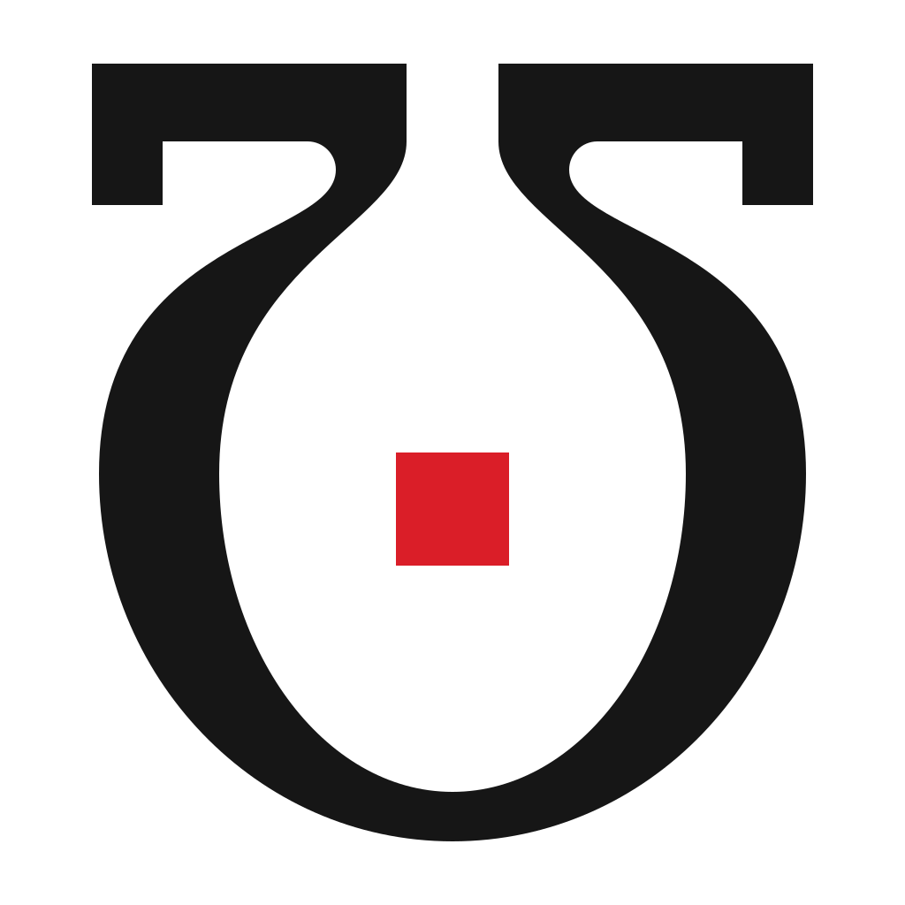
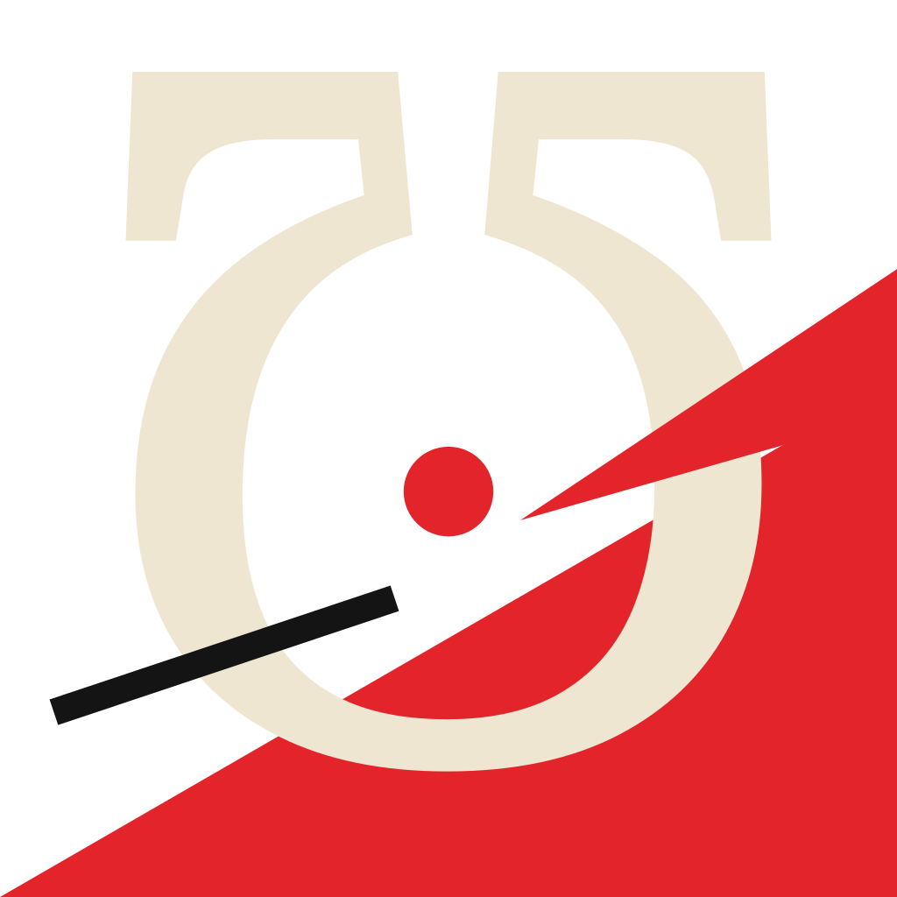
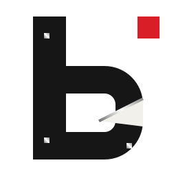
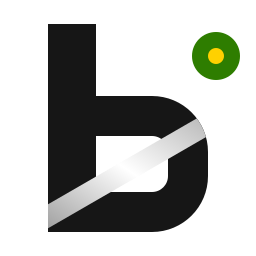

overall, lost vs Primitive: I actually like both primitive and grid these are my top two i think maybe primitive over grid but both very similar liked
overall, picked vs Wedge: btw primitive and gird are not perfect i think a polymath poly glot type site would make sense
overall, picked vs Squiggle: you know grid over squiggle for standards buit squiggle is already in it has passed its liek wildcard in. for young learners we need that exact energy.
02Verbatim notes, part 2 of 11
Grid
overall, picked vs Euclid: grid is wayyy better than euclid for this iter euclid could be way better
logo and mark, picked vs Primitive: you know i dont know what the dot is? i prefer grids omega but the prim omega is cool and i prefer grids b but find thre prim interesting i dont know what the dot is
logo and mark, picked vs Girih: love the direction of girih grid is better
02Verbatim notes, part 3 of 11
Grid
logo and mark, picked vs Wedge: dammm wedge si fire love that punkish energy im goign grid but i love that omega and live that diagonla it is really remoinding me of the metal on a globe imagine yousing a metal tool on a map you know it cuts through it spunk its shiny
landing page, lost vs Primitive: yea primitibe is awesome but grid give sibm . the grid. i dont like eithers buttons as much as squiggle i think primitive sways me more because we need a bit more playful it is fun grid is too strict
landing page, lost vs Wedge: dude i like wedge better here
02Verbatim notes, part 4 of 11
Squiggle
overall, picked vs Wedge: you know i actually love wedge. squiggleis #3 after primitive and grid. wedge #4 but i would never choose wedge but there was something hard and awesome about wedge, something punk steam punk solar punk. we want solarpunk b or subtle punk. squiggle was amazing and it is for oru gamified youger learners and we need that love squiggle
overall, lost vs Primitive: love squiggs and prims primitive higher for acceptance
overall, picked vs Euclid: squiggs way better rn than euclid but we need to see ideal euclid
02Verbatim notes, part 5 of 11
Squiggle
logo and mark, picked vs Euclid: squiggs is much better euclid sucks but squiggs is not the best it can be
logo and mark, picked vs Primitive: these are close but i think squiggle wins here but i want to see improvement on squiggle a merge of squiggle and primitive would be good it would be like disciplined chaos
logo and mark, lost vs Wedge: you know wedge is bettter than squiggle here
02Verbatim notes, part 6 of 11
Squiggle
landing page, picked vs Primitive: dude squiggle takes it here but it needs more grid and primitive energy structure
app screens, picked vs Girih: squiggle is fire girih good too
app screens, picked vs Primitive: you know both good solid love squiggle here
02Verbatim notes, part 7 of 11
Primitive
overall, picked vs Euclid: totally primitive. bro you did the euclid and geometers and mathemeaticiona philosophers lib of alexandria old time thinks shame. this is the polymath one think all polymaths and put them in here for euclid i choose primite it is way better euclid need swork
logo and mark, picked vs Kamon: kamos is weird nto quite right or not enough variance in it what is it supposed to be
logo and mark, lost vs Wedge: this is actually tough i tnkk that wedge is better actually but primitive has some bettter attributes than wedge
02Verbatim notes, part 8 of 11
Primitive
landing page, lost vs Wedge: this is actually tight i live wedge its got math and cool mtath inpired art but a mix of the two are good like primitive is super solid
app screens, lost vs Euclid: both are sold
02Verbatim notes, part 9 of 11
Wedge
overall, lost vs Euclid: in current wedge, in ideal euclid
landing page, picked vs Euclid: i think i would prefer euclid oif i saw it upgrade dbut here its wedge
app screens, lost vs Kamon: both not the best
02Verbatim notes, part 10 of 11
Euclid
overall, picked vs Kamon: so in theory i prefer euclid over kamon but do not do eculid a diservice andmake it good
overall, picked vs Girih: in ideal euclid
logo and mark, picked vs Kamon: both not good camon do not disservice the greeks with their own charcter atlasntis
02Verbatim notes, part 11 of 11
Girih and Kamon
overall, Girih picked vs Kamon: wasnt the biggest fan of either of these but they where interesting kamons logo does nto look right iwth the red dot and the b and a real bucket? there were really cool aspects i want to take from girih in art and generation
D1Decision 1 of 7
Base: Grid's structure, Primitive's play
Grid and Primitive rank top two, and the notes lean Primitive. Grid alone reads too strict. The base keeps Grid's 16-column Swiss grid, its ℧ and its b, and takes Primitive's shapes, colors and knob for play. Copy calls it Grid-Primitive; files stay grid2-*.

GridPrimitiveGrid-Primitive
D2Decision 2 of 7
Young learners get disciplined chaos
Squiggle has the best buttons and the energy for young learners. Merged with Primitive's structure it becomes disciplined chaos. The register switches the Polingual study screens and leaves every frozen flow as it is.
Wedge never becomes the base. Its ℧ and its diagonal stay, the metal tool cutting through a map, shiny, plus its punk, steampunk and solarpunk energy as a subtle-punk b variant.
Diagonal cut, brushed steel on paper

Wedge ℧

subtle-punk b

solarpunk b
D4Decision 4 of 7
Euclid becomes the polymath direction
Round 1's Euclid fell short. Ideal Euclid rebuilds it around the Library of Alexandria, the geometers and the polymaths, from public-domain sources: papyri, Byrne, stoichedon, a Met astrolabe. One landing and two app screens follow.
One Girih pattern system, ten-fold stars and decagons on a 120px tile, sits behind Grid-Primitive as an optional background and drifts as its motion layer. The pattern is computed in code.
Drifts 120px in 24s; stops under reduced motion
D6Decision 6 of 7
Kamon is dropped
Its mark read as unclear: a red dot, a b and a bucket that did not cohere. Nothing from Kamon carries into round 2.
Kamon, dropped
D7Decision 7 of 7
The dot is the knob
The dot comes from Teenage Engineering: Bucket as an instrument you play. It is the knob you turn. In Grid-Primitive the knob is Teenage Engineering orange and carries the gold dot of the live InverseOmega in src/components/InverseOmega.tsx. Primitive's ℧ stays available as an alternate mark inside Grid-Primitive.